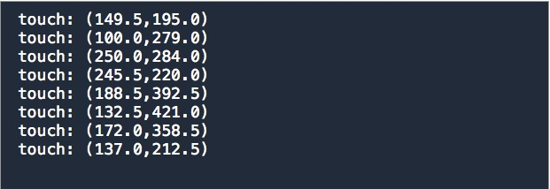

The Finger Painting App

Create a "Single View Application" called FingerPaint
The test suite is in a separate git repo from your project's own repo. This way we can checkout different versions of the test suite for each step without affecting the history of your own app.
Clone the test repo by running the following command from the project root.
git clone https://github.com/hayeah/ios-Finlsdf...
Create the .gitignore file,and add FingerPaintTests/spec to it
# .gitignore
FingerPaintTests/spec
Once the test repo is cloned,we need to add the test's files to xcode
# .gitignore
FingerPaintTests/spec
Run the test now(cmd-u),and the test suite should pass(because it doesn't test anything yet!)
The yellow folders you see in Xcode are "groups". They are basically Xcode's own directory structure, which can be different from the file system's directory structure if you want to organize your source files differently.
We'll now implement interactive drawing by responding to touches.
To get the CanvasView to respond to touches, we can override the touchesBegan method:
override func touchesBegan(touches: NSSet!, withEvent event: UIEvent!){
let t = touches.anyObject() as UITouch
let point = t.locationInView(self)
println("touch: \(point)")
}
Touch the screen, and you'd see where the touch occured:
